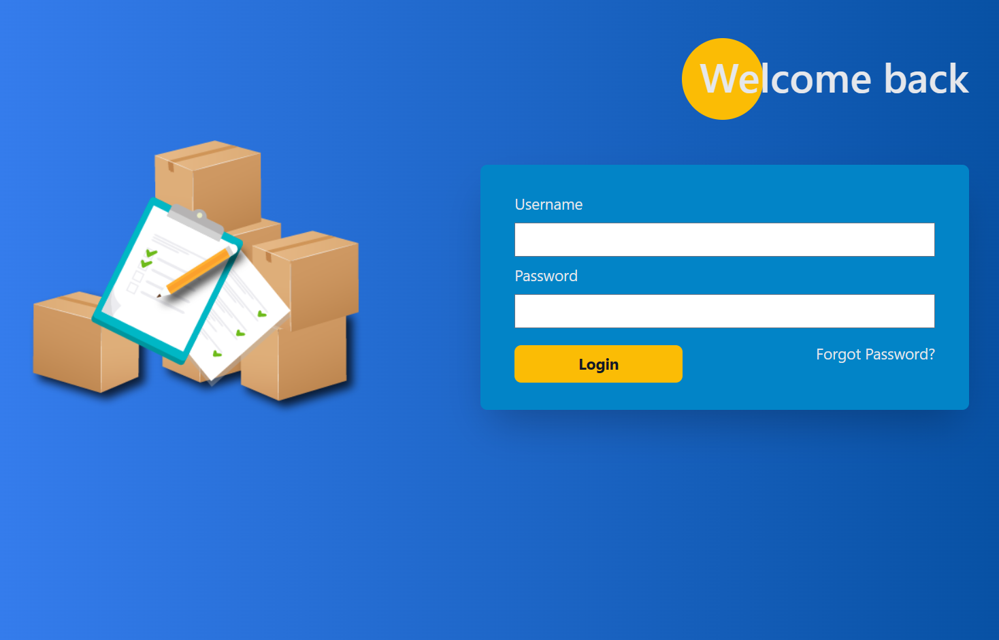
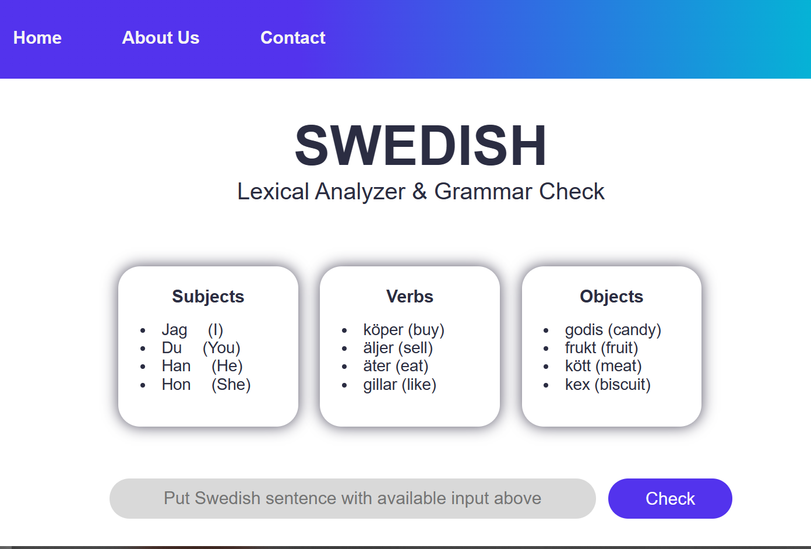
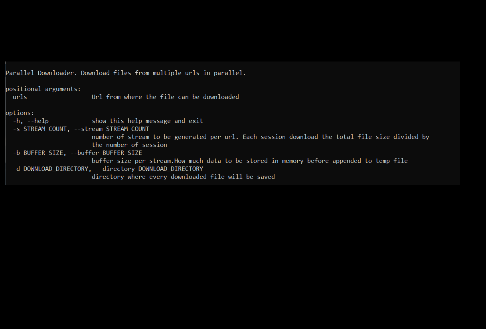
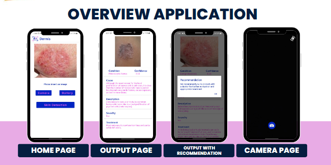

Hello there, I'm Yasir Khairul Malik
Google Cloud Certified Associate Cloud Engineer
I am a fresh graduate from Telkom University with a strong passion for cloud computing, computer networking, and back-end development. As a certified cloud engineer, I specialize in deploying scalable solutions while leveraging programming skills to build efficient systems. I am driven to explore innovative technologies and apply them to solve complex problems.
Projects
Inventory Management System

An inventory management system designed for intelligent storage management and transaction analysis.
Made to follow business logic dictated by client.
Made using Python Django framework, Tailwind CSS framewrok, and PostGreSQL.
Grammar Parser

A grammar parser for a foreign language. Made using python.
Parallel Downloader

A parallel HTML downloader for faster downloads. It requests for multiple chunks of the file(s) to be downloaded and process them concurrently.
Made using python.
Dermal Evaluation with Researched Intelligent System

An application designed to assist in identifying skin conditions through images, generating reports on potential causes, and providing treatment recommendations. By offering image-based skin health consultation services, the application aims to help individuals who may be reluctant or find it challenging to consult with experts, enabling them to diagnose skin conditions more accurately.